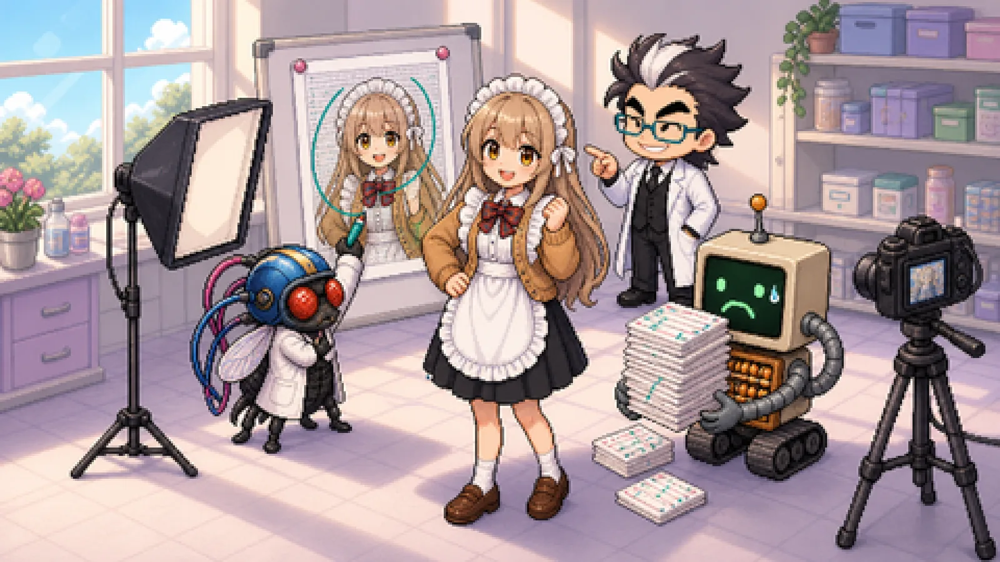
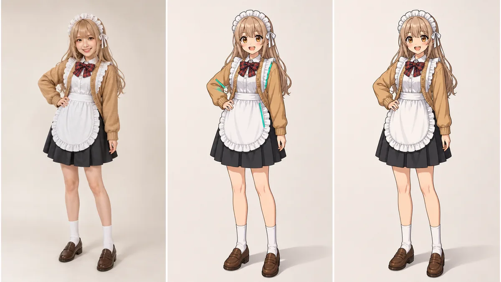
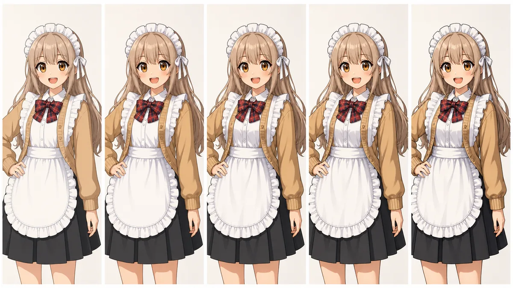
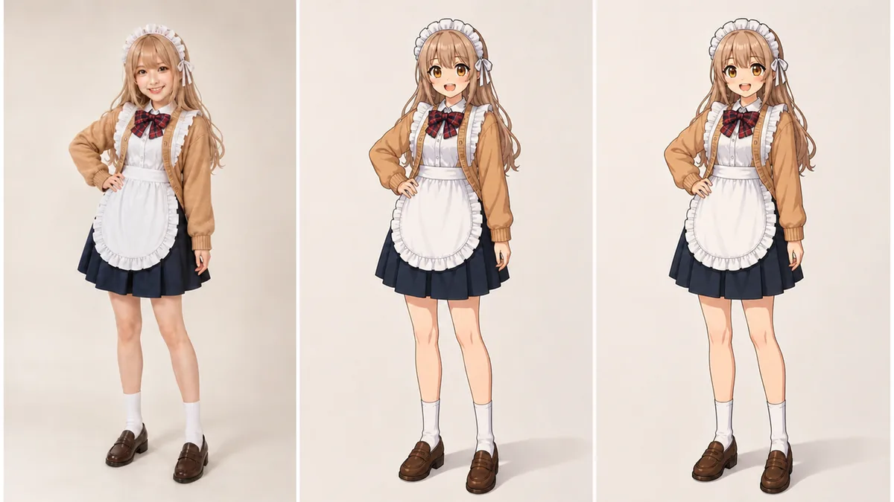
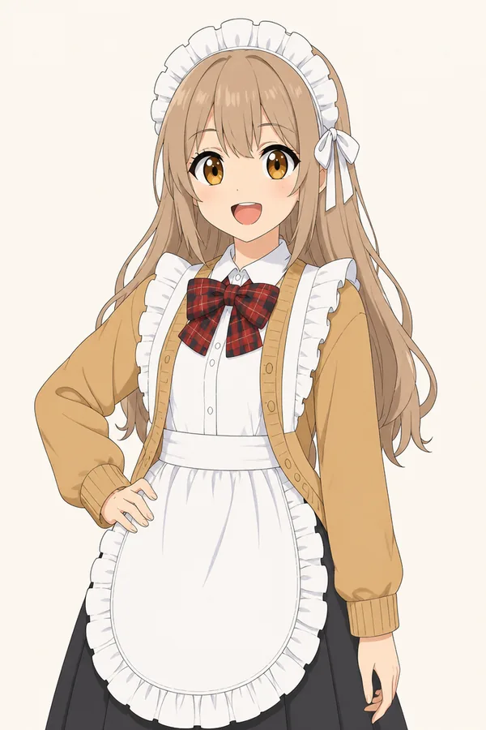
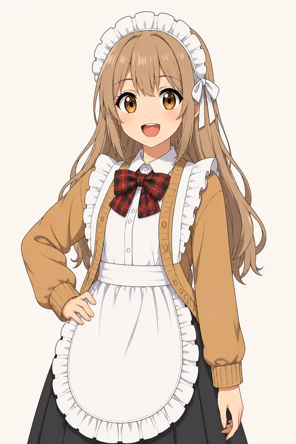
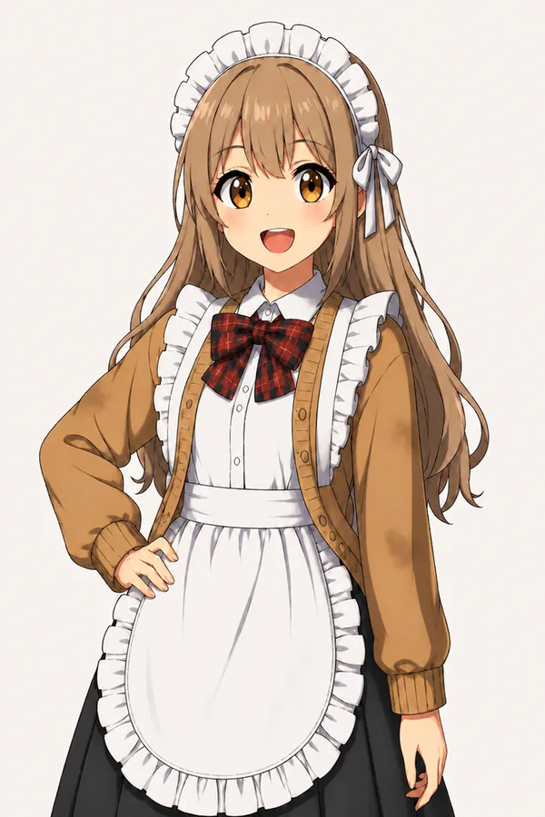
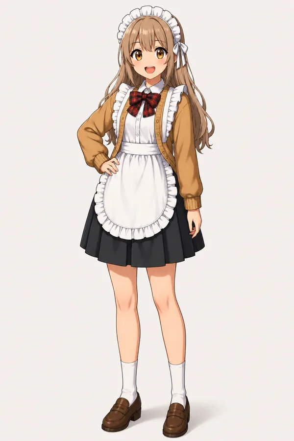

오늘의 과제

박사오늘은 사진을 보고 그린다. 모아가 카디건을 입고 찍은 사진이다. 주름이 몇 개나 보이지?

주판봇세어 보니 서른일곱 개입니다! 전부 옮기겠습니다!

초파리 연구원서른일곱 개를 다 그리면 그림이 사진보다 복잡해질걸? 큰 것부터 고르자.

모아제 카디건에 주름이 그렇게 많았어요…?

모델은 모아입니다. 사진 속 카디건에는 주름이 수십 개 보입니다. 주판봇은 보이는 대로 전부 옮기고, 초파리는 큰 것 세 개만 먼저 고릅니다.
그림 실력·코드·수식을 몰라도 됩니다. 실험을 눌러 보며 따라오세요.
사진을 훑어 눈에 띄는 큰 주름 몇 개를 먼저 고르면, 옷의 모양 대부분이 잡힙니다

학교 수학으로 보면 — 비율(백분율) — 부분의 합을 전체의 합으로 나눈 값입니다.
| 식 조각 | 뜻 |
|---|---|
| 세기 | 주름 하나의 길이 × 깊이(예시 점수) |
| k | 고른 주름 개수 |
| 잡힌 비율 | 옷 모양 중 이미 설명된 몫 |

여행 사진을 친구에게 설명할 때도 '바다, 등대, 노을' 세 가지만 말하면 장면이 떠오릅니다.
애니메이션 원화에서는 '큰 주름 3개 + 소맷부리·밑단'만 그리는 것이 보통입니다. 작화 감독은 큰 주름의 방향이 접점과 맞는지부터 확인합니다.


세기 9·7·5인 큰 주름 세 개가 전체의 70%, 다섯 개면 약 87%를 설명합니다.
큰 주름 세 개는 서로 다른 종류(모임·당김·처짐)인 경우가 많습니다. 종류가 겹치면 하나를 빼고 다른 종류를 넣어 봅니다.
작업에서는 참고 사진 위에 큰 주름 세 개만 색 펜으로 먼저 표시하고, 그다음 선을 긋습니다.

AI에게 '주름을 자세히'라고 했더니 카디건 전체가 잔주름으로 덮였습니다. 자세할수록 좋은 걸까요?
큰 주름 세 개가 먼저 보이는지 확인하세요. 잔주름만 많고 큰 흐름이 없으면 옷이 구겨진 종이처럼 보입니다. 'a few large folds from the shoulders and elbows'처럼 큰 주름을 먼저 말하는 편이 낫습니다.
같은 사진이라도 그림체에 따라 잔주름을 더하거나 덜어 냅니다
손글씨 메모는 핵심 단어만, 계약서는 조항을 빠짐없이 씁니다. 읽는 사람에 따라 양을 바꿉니다.
선을 빼는 이유는 두 가지입니다. 옷이 몸에 붙어 보이게 하는 것, 그리고 여러 조각(주름치마의 주름 하나하나)을 하나의 덩어리로 읽히게 하는 것입니다.
그림체마다 알맞은 정보량 구간이 다릅니다. 이 실험의 예시 구간은 단순풍 1~3, 애니풍 3~6, 실사풍 6~9입니다.
구간보다 많으면 '베낀 느낌', 적으면 '비닐 느낌'이 납니다. 경계는 그림체마다 다르니 구간은 감을 잡는 예시로만 쓰세요.
작업에서는 잔주름도 일단 연하게 그려 둡니다. 다음 단계에서 그림자를 넣을 자리를 알려 주는 안내선이 되기 때문입니다.
단순한 그림체로 요청했는데 AI가 솔기와 잔주름을 잔뜩 넣었습니다. 그대로 써도 될까요?
그림체와 정보량이 맞지 않으면 그림이 어색해집니다. 'simple flat cel shading, only a few large folds'처럼 정보량을 같이 적거나, 결과에서 선을 덜어 내는 후보정을 합니다.
떨어지는 그림자 → 입체 그림자 → 섬 그림자 → 진한 2차 그림자 → 완성 순서로 얹습니다
화장도 바탕 → 넓은 음영 → 포인트 → 하이라이트 순서로 얹습니다. 순서를 바꾸면 번집니다.
디지털 채색에서는 단계마다 레이어를 나눕니다. ① 떨어지는 그림자와 '약속된 그림자'(목 아래·치마 아래처럼 관례로 넣는 그림자) ② 잔주름 안내선을 따라 입체 그림자 ③ 주름이 모자란 곳에 섬 그림자 ④ 가장 깊은 곳에 진한 2차 그림자 ⑤ 정리.
①은 '무엇이 빛을 가렸나'가 분명한 그림자라 틀릴 일이 적습니다. 그래서 먼저 넣어 기준으로 삼습니다.
②는 1단계에서 연하게 남긴 잔주름을 안내선 삼아 넣으면 자연스럽습니다. ③은 주름 선이 모자란 곳의 입체를 보충합니다.
④는 가장 깊은 골에만 아주 조금 넣습니다. 이 단계가 넓어지면 옷이 무거워 보입니다.

AI 그림의 그림자가 전부 같은 진하기 한 겹입니다. 고칠 곳일까요?
한 겹이면 깊은 골과 얕은 면의 차이가 사라져 납작해 보입니다. 'two-tone cel shading with a darker second shadow only in the deepest folds'처럼 단계를 적어 다시 요청할 수 있습니다.
얕은 주름·물체와 거리가 있는 곳·둥근 곳의 그림자 경계를 흐리면 자연스럽습니다
학교 수학으로 보면 — 호의 길이 = 반지름 × 각도(라디안) — 원의 둘레 일부의 길이입니다.
| 식 조각 | 뜻 |
|---|---|
| 둥근 반지름 | 주름 산이나 몸의 둥근 정도. 클수록 완만 |
| 경계 각도 폭 | 밝음이 어둠으로 바뀌는 각도 구간(예시 20°) |
| 흐린 폭 | 그림자 경계를 흐리게 칠할 너비 |
햇빛 아래 둥근 기둥의 그늘은 서서히 어두워지고, 각진 건물 모서리의 그늘은 칼로 자른 듯 나뉩니다.
3D 렌더링에서는 이것이 저절로 계산됩니다. 그림에서는 흐림 붓의 크기를 부위마다 바꿔 같은 효과를 냅니다. 바탕색에 위아래 그라데이션을 깔면 단순한 덩어리(구·원기둥)의 입체가 한 번 더 강조됩니다.
반지름 1cm면 0.35cm, 6cm면 2.1cm로 흐린 폭이 반지름에 비례해 늘어납니다.
그래서 '얕은 주름, 둥근 곳'은 넓게, '깊은 주름, 옷깃 끝'은 좁게 흐립니다. 물체와 떨어진 곳의 떨어지는 그림자도 넓게 번집니다.
작업에서는 흐림 붓 크기를 두세 가지로 정해 두고 부위에 맞춰 바꿉니다.
AI 그림에서 그림자가 전부 부드럽게 번져 옷깃까지 흐릿합니다. 괜찮을까요?
날카로운 곳까지 흐리면 형태가 녹아 보입니다. 'crisp shadow edges at collars and deep folds, soft gradients only on rounded areas'처럼 부위를 나눠 요청합니다.
이 부에서 배운 원리를 그림 생성 AI(Genspark 등)로 직접 확인합니다. A는 이 페이지 그림을 실제로 만든 프롬프트, B는 원리를 하나 빼거나 바꾼 비교용 문장입니다.
참고 그림 내려받기: haru_anime_base · sia_anime_base · moa_anime_base · haru_sheet · sia_sheet · moa_sheet · doctor_sheet · fruitfly_sprites_6 · jupanbot_ref_genspark_v0 · pixel_style_ref_prev_cover
사진처럼 보이는 모델과, 큰 주름 셋만 고른 그림, 완성 그림을 나란히 만들어 '고르기'를 눈으로 확인합니다.
첨부: refs/moa_anime_base.png, refs/moa_sheet.png
Illustration, wide 16:9. Art style: high-quality anime illustration, clean confident lineart, two-tone cel shading with a darker second shadow only in the deepest folds, natural adult proportions. Match the attached reference images exactly (face, hair, colors, accessories). All characters are adults in their early twenties (the Professor is an adult man); modest outfits exactly as described. A side-by-side comparison in three panels of the same pose: LEFT a photorealistic studio photo of a fictional adult model in her early twenties cosplaying Moa; CENTER the anime version with only three big folds highlighted by thick teal lines (one at the bent left elbow, one diagonal from the shoulder, one hanging at the waist); RIGHT the finished anime illustration. Moa (adult maid intern, long ash-beige wavy hair, white frilled maid headband with a white ribbon over her LEFT ear, amber eyes), wearing camel knit cardigan over a white blouse, red and navy plaid bow tie, white frilled apron, black skirt, standing in three-quarter view, left elbow bent with the hand near the chest. The photo panel shows many small natural wrinkles; the drawing panels keep only the large folds. Not resembling any real celebrity. Plain off-white studio background or a bright clean lab interior. No text, no letters, no numbers, no logos, no watermark, no revealing clothing, not childlike, no school uniform, not resembling any famous anime character.
Same characters, same layout and pose. Change only: in the center and right panels, copy every small wrinkle and seam line from the photo panel. Still no text.

실제 결과: B에서는 가운데 그림의 색 선(큰 주름 표시)만 사라지고 나머지는 A와 거의 같았습니다. 같은 대화에서는 도구가 앞 그림을 따라가려 해서 차이가 약해집니다. 새 대화에서 A 문장 끝에 B 문장을 붙여 처음부터 만들면 차이가 더 잘 보입니다.
한 장에 다섯 단계를 몰아 요청하면 차이가 약하게 나옵니다(이 페이지 그림이 그 예). 같은 대화에서 단계마다 한 장씩 요청하는 방법을 연습합니다.
첨부: refs/moa_anime_base.png, refs/moa_sheet.png
Illustration, wide 16:9. Art style: high-quality anime illustration, clean confident lineart, two-tone cel shading with a darker second shadow only in the deepest folds, natural adult proportions. Match the attached reference images exactly (face, hair, colors, accessories). All characters are adults in their early twenties (the Professor is an adult man); modest outfits exactly as described. Five small panels in a row showing the same upper-body drawing of Moa getting shadows step by step, light from the upper left: 1) cast shadows only (under the chin and under the collar, under the sleeves), 2) plus large form shadows on the right side, 3) plus small floating island shadows on the cardigan folds, 4) plus a darker second shadow only in the deepest creases, 5) the clean finished image. Moa (adult maid intern, long ash-beige wavy hair, white frilled maid headband with a white ribbon over her LEFT ear, amber eyes), wearing camel knit cardigan over a white blouse, red and navy plaid bow tie, white frilled apron, black skirt. Each panel separated by a thin gap, same framing, no numbers or labels. Plain off-white studio background or a bright clean lab interior. No text, no letters, no numbers, no logos, no watermark, no revealing clothing, not childlike, no school uniform, not resembling any famous anime character.
1) Upper body of Moa (same character as the reference), flat colors only, no shadows at all, light from the upper left. 2) Same image. Add only cast shadows: under the chin, under the collar and under the sleeves. Nothing else. 3) Same image. Add large form shadows on the right side of the body and arms. 4) Same image. Add a few small floating island shadows on the cardigan folds. 5) Same image. Add a darker second shadow only in the deepest creases. Keep everything else unchanged.




실제 결과: 1→4단계로 갈수록 그림자가 한 겹씩 쌓였습니다(4단계에서 가장 깊은 곳이 진해짐). 5단계에서는 도구가 상반신을 전신으로 바꿔 버렸습니다. 단계마다 'keep the same framing'을 덧붙이면 구도가 흔들리지 않습니다.
한 번의 요청에 여러 변화를 넣을수록 도구는 차이를 뭉개기 쉽습니다. 바꿀 것을 한 문장에 하나씩 주는 것이 요령입니다.

| 항목 | 주판봇 | 초파리 |
|---|---|---|
| 닮음(외형 고정값) | 8 | 8 |
| 옷 모양(큰 주름) | 5 | 8 |
| 그림다움(정보량) | 3 | 8 |
| 합계 | 16 | 24 |


점수는 이야기 속 예시입니다. 실제 그림을 평가한 값이 아닙니다.
| 주제 | 한 줄 | 작업에서는 |
|---|---|---|
| 큰 주름부터 | 세 개가 약 70% | 사진 위에 큰 주름 셋 표시 |
| 정보량 | 실사풍은 더하고 단순풍은 뺀다 | 그림체에 맞는 선 수 |
| 그림자 순서 | 떨어지는 → 입체 → 섬 → 2차 → 정리 | 레이어를 단계별로 |
| 흐림 | 흐린 폭 ≈ 반지름 × 각도 폭 | 둥근 곳만 넓게 흐리기 |

이 페이지에 나온 개념·방법·비유·쓰임을 모았습니다. 검색하고, "설명 보러 가기"로 본문에 돌아갑니다.
지식 색인을 출처와 함께 파일로 내려받습니다. 서지 관리는 BibTeX·RIS, 온톨로지 편집은 Turtle, 그래프 도구는 CSV, 여러 페이지 합치기는 kg.json입니다.